We now have the data we need to commence quality control, but some
reformatting is needed. The MethylAid
(Luijk, 2014) package that we developed requires the targets data frame
to store IDAT file root names in a Basename column.
Sometimes, data comes with a sample sheet to faciliate this, but in this
case the information needs to be extracted from the supplementary file
column instead.
## [1] "GSM3228562_200550980002_R01C01_Grn.idat" "GSM3228563_200550980002_R02C01_Grn.idat" "GSM3228564_200550980002_R03C01_Grn.idat"
## [4] "GSM3228565_200550980002_R04C01_Grn.idat" "GSM3228566_200550980002_R05C01_Grn.idat" "GSM3228567_200550980002_R06C01_Grn.idat"The following sample quality control steps require the MethylAid and BiocParallel packages. Using parallel processing and/or batches will reduce both memory load and run-times when extracting intensities from IDAT files. Please see the MethylAid vignette for more details.
library(MethylAid)
library(BiocParallel)
library(IlluminaHumanMethylationEPICmanifest)
BPPARAM <- MulticoreParam(6)
sData <- MethylAid::summarize(targets, batchSize=50, base="../GSE116339/IDATs")
save(sData, file="./data/sData_example_small.Rdata")After this summarize(), the Shiny web application can be
launched to visualize() the data and identify outliers. In
this instance, there are no apparent outliers, but if found they can be
removed from the dataset. To easier visualise if your data conforms to
typical patterns, you can utilise the MethylAidData
package alongside the background option. Darker blue
colours indicate regions where many observations are found in the
example data, and can serve as a guide for expected peak areas.
List of QC probes
qcProbes = list(
BSI = "^BISULFITE CONVERSION I$",
BSII = "^BISULFITE CONVERSION II$",
EC = "^EXTENSION$",
SPI = "^SPECIFICITY I$",
HYB = "^HYBRIDIZATION$",
NP = "^NON-POLYMORPHIC$",
SPII = "^SPECIFICITY II$",
TR = "^TARGET REMOVAL$",
SC = "^STAINING$",
NC = "^NEGATIVE$"
)Read in function to make MethylAid plots
## Warning: `aes_string()` was deprecated in ggplot2 3.0.0.
## ℹ Please use tidy evaluation idioms with `aes()`.
## ℹ See also `vignette("ggplot2-in-packages")` for more information.
## [90mThis warning is displayed once every 8 hours.[39m
## [90mCall `lifecycle::last_lifecycle_warnings()` to see where this warning was generated.[39m## Warning: Using `size` aesthetic for lines was deprecated in ggplot2 3.4.0.
## ℹ Please use `linewidth` instead.
## [90mThis warning is displayed once every 8 hours.[39m
## [90mCall `lifecycle::last_lifecycle_warnings()` to see where this warning was generated.[39m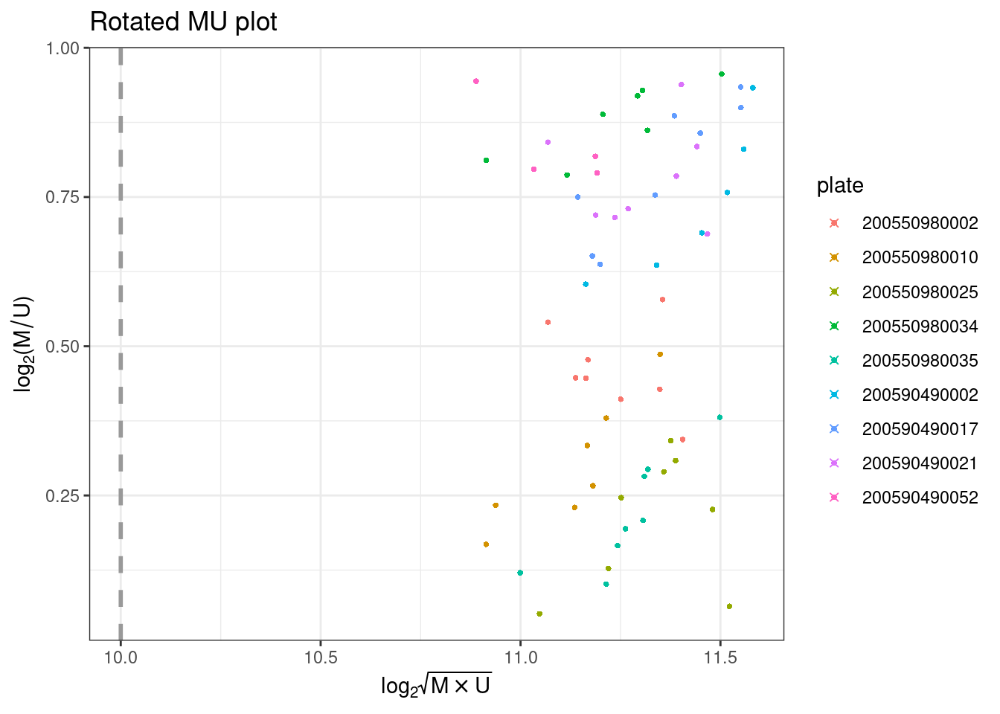
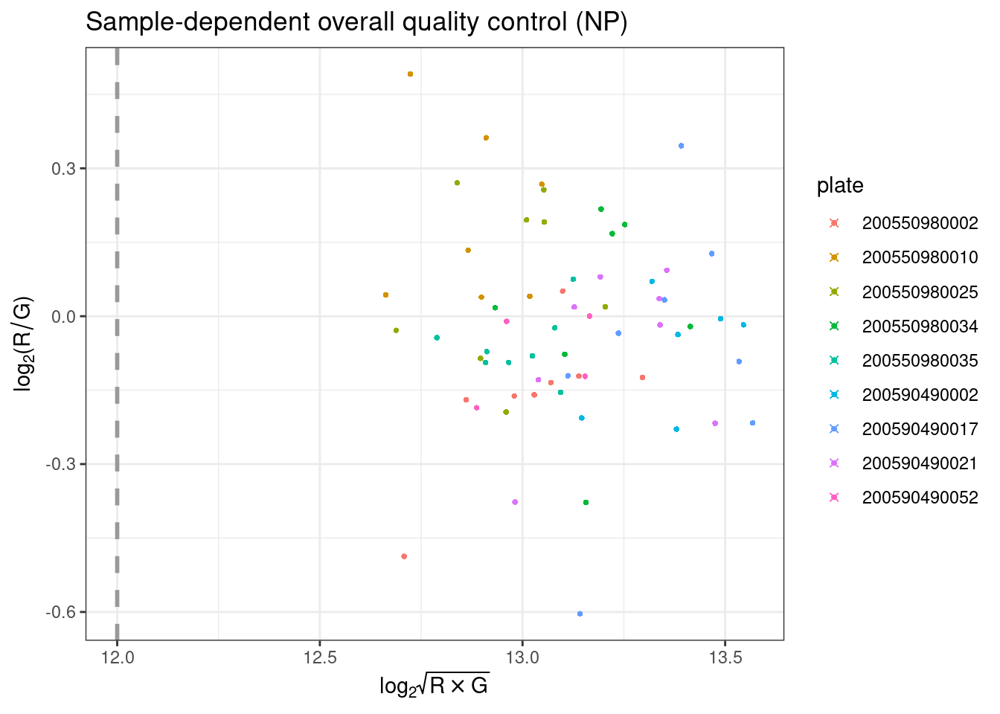
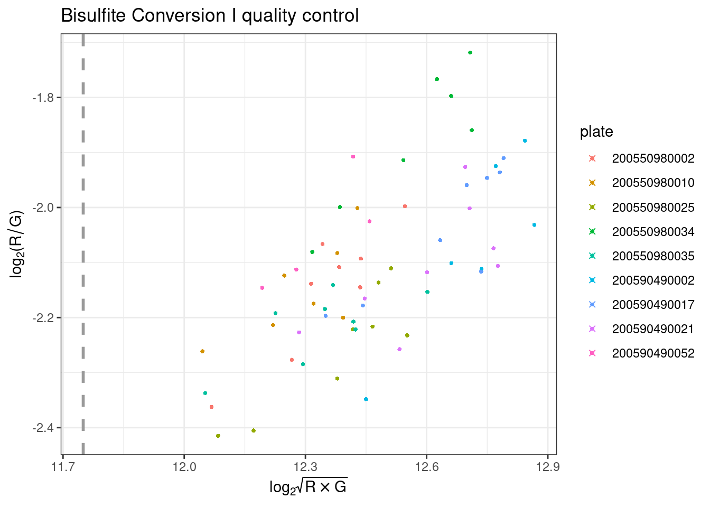
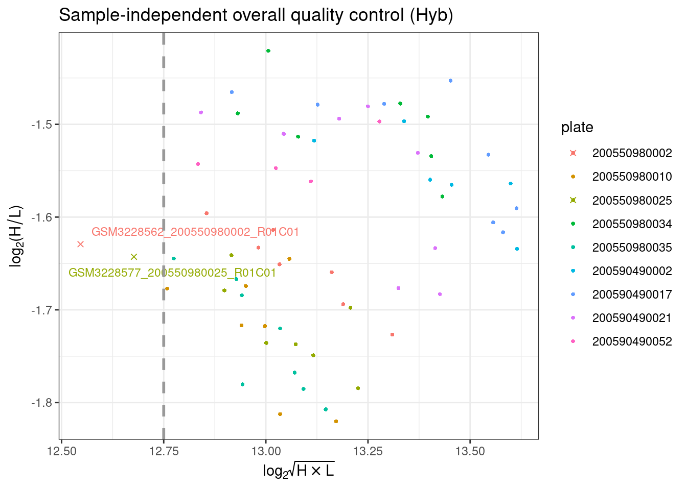
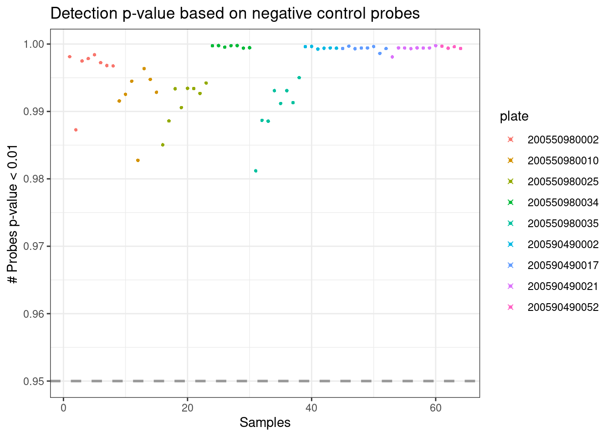
thresholds <- c(10, 12, 11.75, 12.75, 0.95)
outliers_auto <- get_outliers(object = sData, thresholds = thresholds)
outliers_auto## MU OP BS HC DP
## GSM3228562_200550980002_R01C01 FALSE FALSE FALSE TRUE FALSE
## GSM3228577_200550980025_R01C01 FALSE FALSE FALSE TRUE FALSE## [1] "GSM3228562" "GSM3228577"Remove outliers
## [1] 62 13RGsetFor the rest of the pipeline, our data will need to be available as
an RGChannelSetExtended object. Reading in large numbers of
IDAT files is memory-intensive and time-consuming. Therefore, our DNAmArray
package offers the read.metharray.exp.par() function, which
distributes the IDAT files to each of the workers registered using BiocParallel.
It then passes them in batches to read.metharray.exp() from
minfi
(Feinberg, 2014) and combines the returned RGset
objects.
library(DNAmArray)
.guessArrayTypes <- function(nProbes) {
arrayAnnotation <- c(array = "IlluminaHumanMethylationEPIC", annotation = "20a1.hg38")
arrayAnnotation
}
environment(.guessArrayTypes) <- asNamespace('minfi')
assignInNamespace(".guessArrayTypes", .guessArrayTypes, ns = "minfi")
register(MulticoreParam(6))
RGset <- read.metharray.exp(base="../GSE116339/IDATs/", targets, verbose=FALSE, extended=TRUE)
library(qs)
qsave(RGset, file = "./data/RGset_example_small.qs", preset = "fast")Reading data in parallel is subject to errors and debugging is often
difficult. Recently, BiocParallel
has been extended with a comprehensive set of functions for debugging on
various parallel architectures. If problems arise, we recommend using
BatchJobsParam() with the log=TRUE option in
order to facilitate resolution.
Our data is now an RGset object that can used for
visualization. You can see below that inside this object the
colData holds the same information as targets,
and that there are 5 assay layers. The annotation
information tells us that the methylation was measured using a EPIC
array and that hg19 is the reference genome.
## class: RGChannelSetExtended
## dim: 1052641 62
## metadata(0):
## assays(5): Green Red GreenSD RedSD NBeads
## rownames(1052641): 1600101 1600111 ... 99810990 99810992
## rowData names(0):
## colnames(62): GSM3228563_200550980002_R02C01 GSM3228564_200550980002_R03C01 ... GSM3228624_200590490052_R03C01
## GSM3228625_200590490052_R04C01
## colData names(14): sample_ID geo_accession ... Basename filenames
## Annotation
## array: IlluminaHumanMethylationEPIC
## annotation: 20a1.hg38In order to further visualize the data, we store the beta values
using the getBeta() function from minfi
(Feinberg, 2014). The type="Illumina" option adds 100 to
the denominator of the beta-value calculation, preventing NA values
being recorded when the methylated and unmethylated signal are both
0.
## [1] 866836 62Using densityPlot() from minfi
(Feinberg, 2014), we can visualize the per sample average beta-value
distribution. This gives us a global impression of the data and allows
us to identify possible anomalous samples. We expect this distribution
to be bimodal with the peaks representing methylated and unmethylated
signals. Any centre peaks should be further investigated for problems,
such as ambiguous mapping.
There is one sample with a strange distribution. We can identify and remove it.
beta_outlier <- ifelse(colSums(betas > 0.3 & betas < 0.5) > 120000, T, F)
RGset$beta_outlier <- beta_outlier
densityPlot(RGset,
main="Beta density plot",
xlab="Beta values",
sampGroups = beta_outlier) 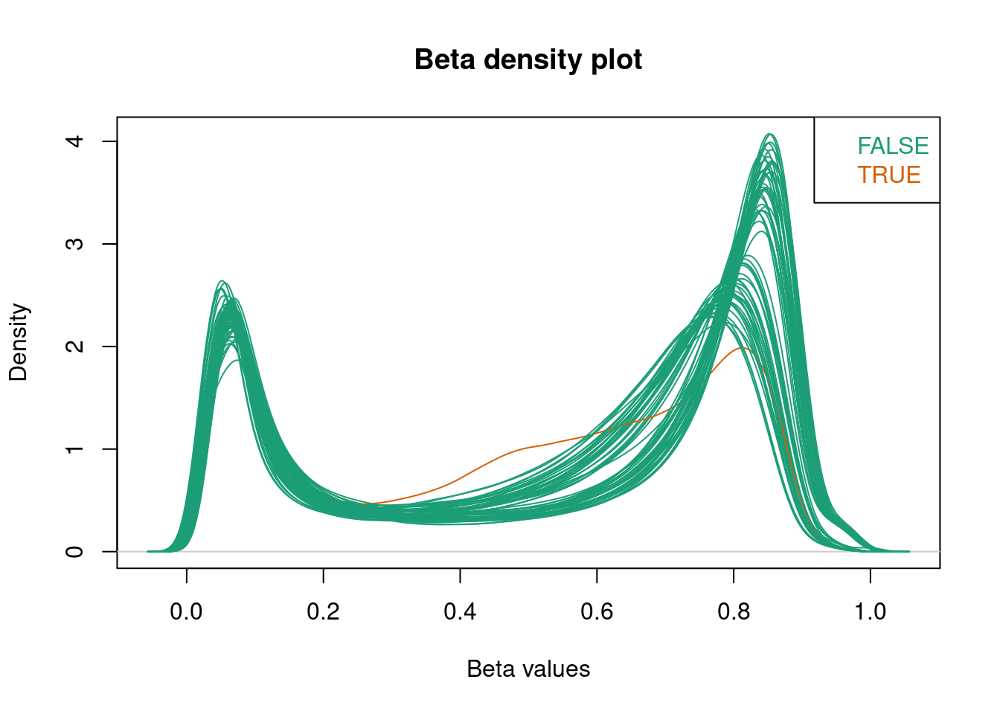
RGset <- RGset[,!colnames(RGset) %in% c('GSM3228582_200550980025_R06C01')]
targets <- targets %>% filter(!Basename == 'GSM3228582_200550980025_R06C01_Grn.idat')For this data, the density plot is now clearly bimodal with no obvious outliers.
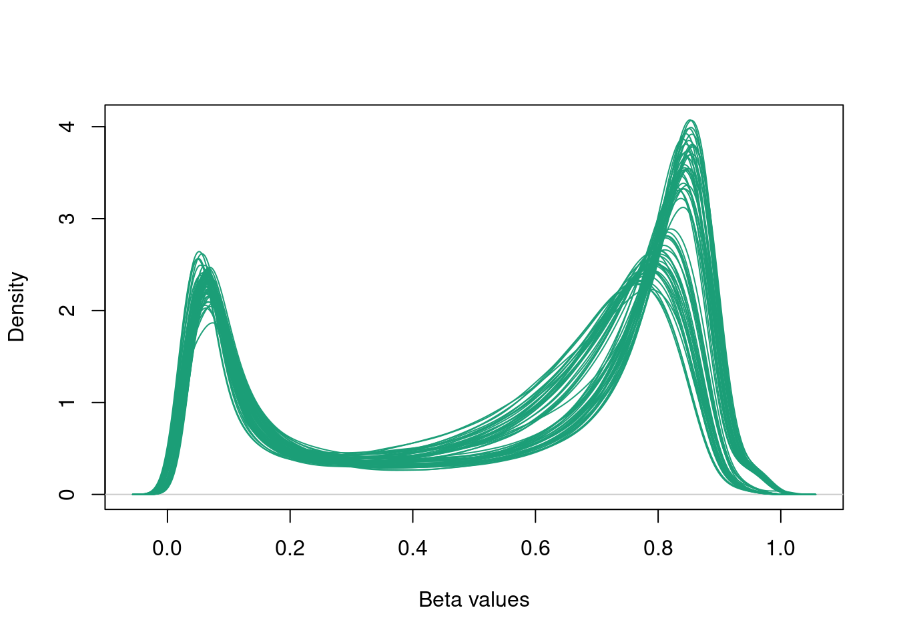
Using the prcomp_irlba() function from irlba
we can calculate principal components. By assessing the amount of
variance explained by these and visualising them, we can better
interpret the data. The package ggfortify
helps ggplot2
interpret PCA objects, allowing prcomp objects to be passed
to the autoplot() function.
## Importance of first k=10 (out of 61) components:
## PC1 PC2 PC3 PC4 PC5 PC6 PC7 PC8 PC9 PC10
## Standard deviation 37.9256 13.99390 10.0197 8.1650 7.65359 7.26825 5.3510 5.13386 4.97126 4.83064
## Proportion of Variance 0.5373 0.07316 0.0375 0.0249 0.02188 0.01973 0.0107 0.00985 0.00923 0.00872
## Cumulative Proportion 0.5373 0.61049 0.6480 0.6729 0.69478 0.71452 0.7252 0.73506 0.74429 0.75301In this instance, our principal components explain over 50% of the
variance in the data and there is evidence of clustering in the plot. By
passing the original data to the autoplot() function using
the data option, we can investigate clustering by colouring
candidate variables. Our data has yet to undergo probe masking, which
removes sex chromosome data, so groups of principal components according
to whether an individual is male or female appear in the plot.
Calculate variance explained by each PC
var_explained =
data.frame(PC = 1:nrow(targets),
var_explained = pca$sdev^2 / sum(pca$sdev^2))[1:ncol(pca$x),]
var_explained## PC var_explained
## 1 1 0.537331692
## 2 2 0.073156791
## 3 3 0.037504787
## 4 4 0.024904938
## 5 5 0.021883049
## 6 6 0.019734989
## 7 7 0.010696748
## 8 8 0.009846137
## 9 9 0.009232292
## 10 10 0.008717390Plot a screeplot to visualize variance explained
var_explained %>% ggplot(aes(x=PC, y=var_explained)) +
geom_line() +
geom_point(color='grey5', fill='#6DACBC', shape=21, size=3) +
scale_x_continuous(breaks=1:ncol(pca$x)) +
xlab("Principal Component") +
ylab("Proportion of variance explained") +
theme_bw()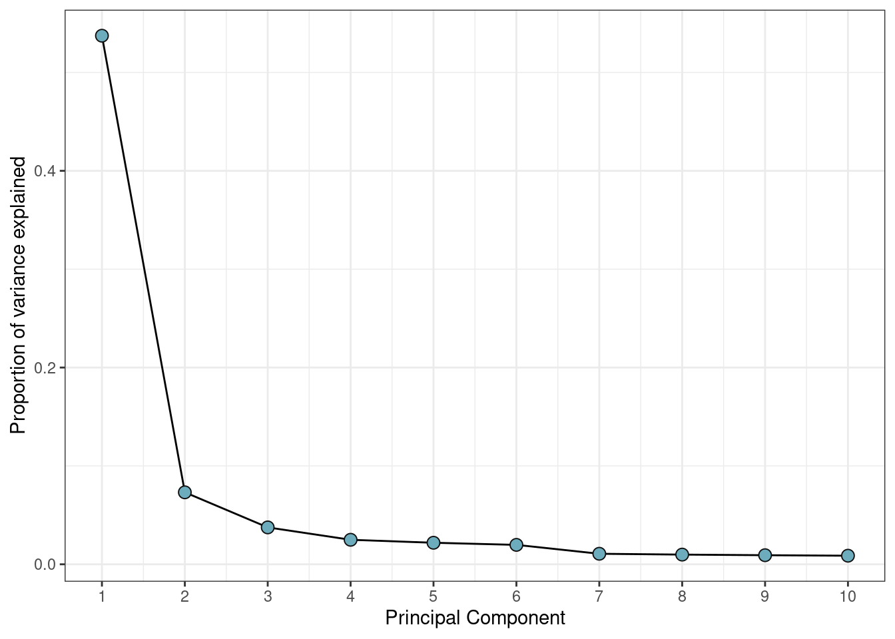
Remove constant variables for heatmap
plot_vars <- apply(targets, 2, function(x) sd(as.numeric(factor(x)), na.rm=T))
plot_vars <- names(plot_vars[!plot_vars %in% c(NA, 0)])Make heatmap data frame
Convert all variables to numeric and calculate correlations between PCs and variables
heatmap_df <- apply(heatmap_df, 2, function(x) as.numeric(factor(x)))
cxy <- round(cor(pca$x, scale(heatmap_df), use="pairwise.complete.obs"),2) Make a heatmap of these correlations.
col_fun <- colorRamp2(c(-1, 0, 1), c("#458797", "white", "#ce67a6"))
Heatmap(
t(cxy),
col = col_fun,
border = 'grey5',
cluster_columns = FALSE,
show_row_dend = TRUE,
show_column_dend = FALSE,
name = "Value",
row_names_gp = gpar(fontsize = 8),
column_names_gp = gpar(fontsize = 8),
cell_fun = function(j, i, x, y, width, height, fill) {
grid.rect(x, y, width, height,
gp = gpar(col = "white", lwd = 1, fill = NA))
grid.text(ifelse(abs(t(cxy)[i,j]) > 0.4,
sprintf("%.2f", round(t(cxy)[i, j], 2)),
""),
x, y, gp = gpar(fontsize = 6, col = "black"))
}
)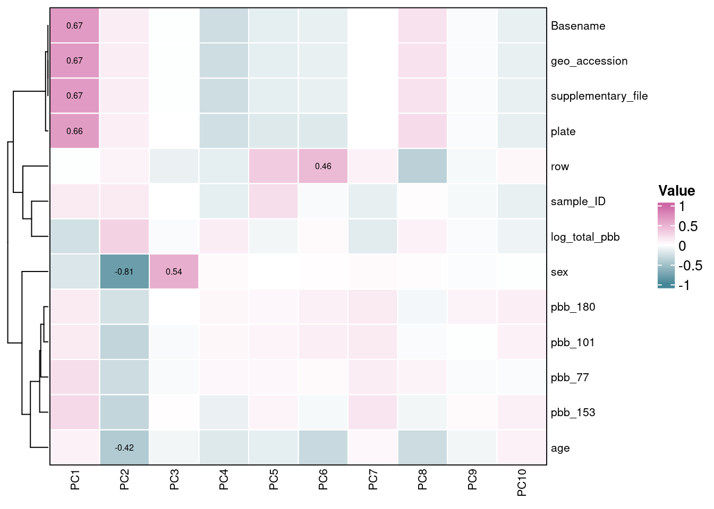
Add PCs to experiment metadata
Plot PC1 v. PC2 for variables of interest
pc_df %>%
ggplot(aes(x = PC1, y = PC2, color = plate)) +
geom_point(size = 1.5) +
labs(x = paste0("PC1 (", round(100*var_explained[1,2], 2), "%)"),
y = paste0("PC2 (", round(100*var_explained[2,2], 2), "%)"),
color = "Array") +
theme_bw()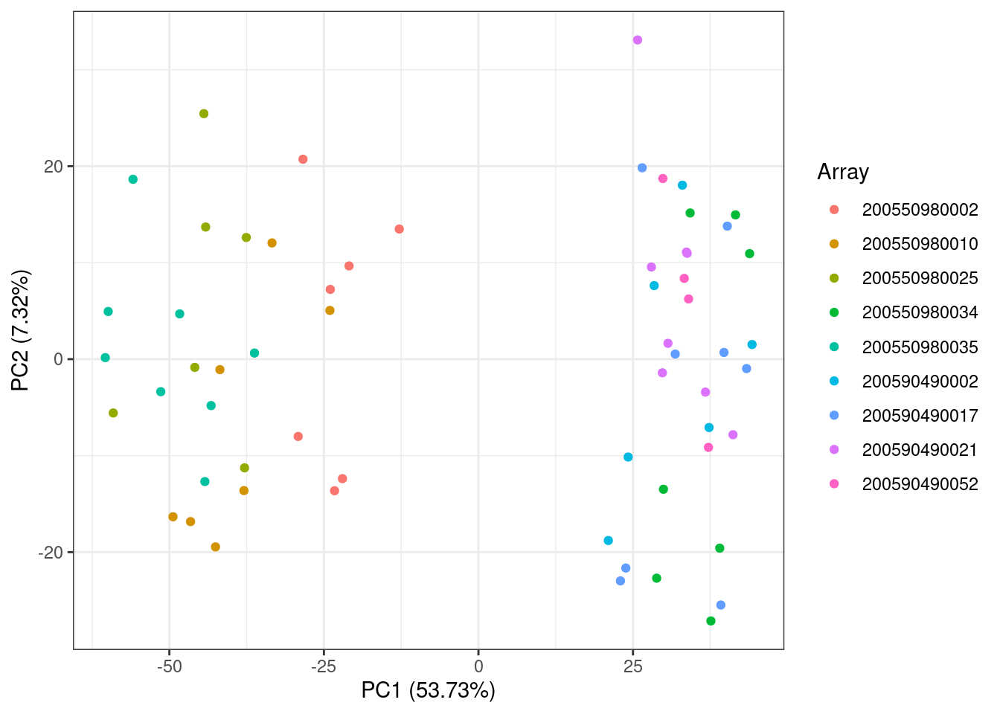
pc_df %>%
ggplot(aes(x = PC1, y = PC2, color = sex)) +
geom_point(size = 1.5) +
labs(x = paste0("PC1 (", round(100*var_explained[1,2], 2), "%)"),
y = paste0("PC2 (", round(100*var_explained[2,2], 2), "%)"),
color = "Sex") +
theme_bw()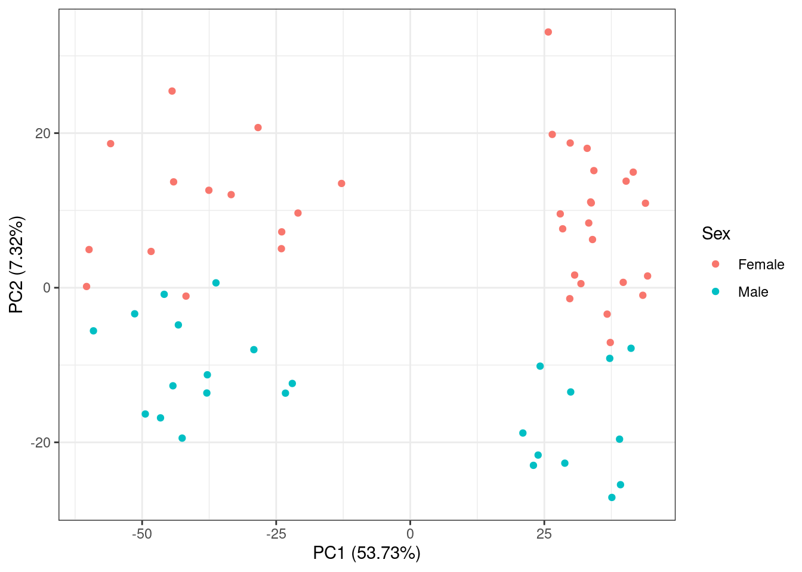
omicsPrint
(Van Iterson, 2018) is a package we developed to detect data linkage
errors through inspecting sample relations in multiple omics studies.
Included with the package is the hm450.manifest.pop.GoNL
data, which stores SNP probe information in a GRanges class
object. This is then used to create a subset of the beta values for
genotyping.
We use the Zhou manifest, which was pulled recently (2022) from Zhou’s github: https://zwdzwd.github.io/InfiniumAnnotation
## Parsed with column specification:
## cols(
## .default = col_logical(),
## CpG_chrm = col_character(),
## CpG_beg = col_double(),
## CpG_end = col_double(),
## probeID = col_character()
## )## See spec(...) for full column specifications.We are interested in the:
snp_cpgs <- snp_cpgs %>%
dplyr::select(
cpg = probeID,
chr = CpG_chrm,
start = CpG_beg,
end = CpG_end,
MASK_snp5_EUR
) %>%
mutate(
chr = substr(chr,4,5)
)
snp_cpgs <- (snp_cpgs %>%
dplyr::filter(MASK_snp5_EUR == TRUE))$cpg
print(paste0("There are ", length(snp_cpgs),
" CpGs containing common European SNPs"))## [1] "There are 28152 CpGs containing common European SNPs"Subset betas
## [1] 28152 61rownames(targets) <- sub("_Grn.idat", "", targets$Basename)
table(rownames(targets) == colnames(betas_snps))##
## TRUE
## 61Create a data frame of all samples against each other e.g.:
## idx idy
## 1 GSM3228563_200550980002_R02C01 GSM3228563_200550980002_R02C01
## 2 GSM3228564_200550980002_R03C01 GSM3228563_200550980002_R02C01
## 3 GSM3228565_200550980002_R04C01 GSM3228563_200550980002_R02C01
## 4 GSM3228566_200550980002_R05C01 GSM3228563_200550980002_R02C01
## 5 GSM3228567_200550980002_R06C01 GSM3228563_200550980002_R02C01
## 6 GSM3228568_200550980002_R07C01 GSM3228563_200550980002_R02C01Save the sample name, so we know which samples should match
relations$sample_name_x <- targets[relations$idx, "sample_ID"]
relations$sample_name_y <- targets[relations$idy, "sample_ID"]Create a relation_type variable and set it as Identical if the samples come from the same individual
relations$relation_type <- "unrelated"
relations$relation_type[relations$sample_name_x == relations$sample_name_y] <- "identical"
table(relations$relation_type)##
## identical unrelated
## 61 3660Calculate genotype using omicsPrint
The function beta2genotype() then genotypes the
observations by measuring homozygous or heterozygous alleles at these
SNP probes. Lastly alleleSharing() assesses the
relationships between different individuals, which can be unrelated,
twins, or identical. The results can then be visualised using the
inferRelations() function.
genotype <- beta2genotype(betas_snps,
na.rm=TRUE,
minSep = 0.25,
minSize = 5,
centers = c(0.2, 0.5, 0.8),
assayName=NULL)
str(genotype)## int [1:977, 1:61] 2 1 1 2 3 1 3 2 2 2 ...
## - attr(*, "dimnames")=List of 2
## ..$ : chr [1:977] "cg19405842" "cg01296877" "cg21783012" "cg10091792" ...
## ..$ : chr [1:61] "GSM3228563_200550980002_R02C01" "GSM3228564_200550980002_R03C01" "GSM3228565_200550980002_R04C01" "GSM3228566_200550980002_R05C01" ...Save output
## Hash relations## Pruning 977 SNPs ...## 0 SNPs removed because of low call rate!## 0 samples removed because too few SNPs called!## Using 977 polymorphic SNPs to determine allele sharing.## Running `square` IBS algorithm!## 62 of 1891 (3.28%) ...Plot
## Assumed relation
## Predicted relation identical unrelated
## identical 61 .
## unrelated . 1830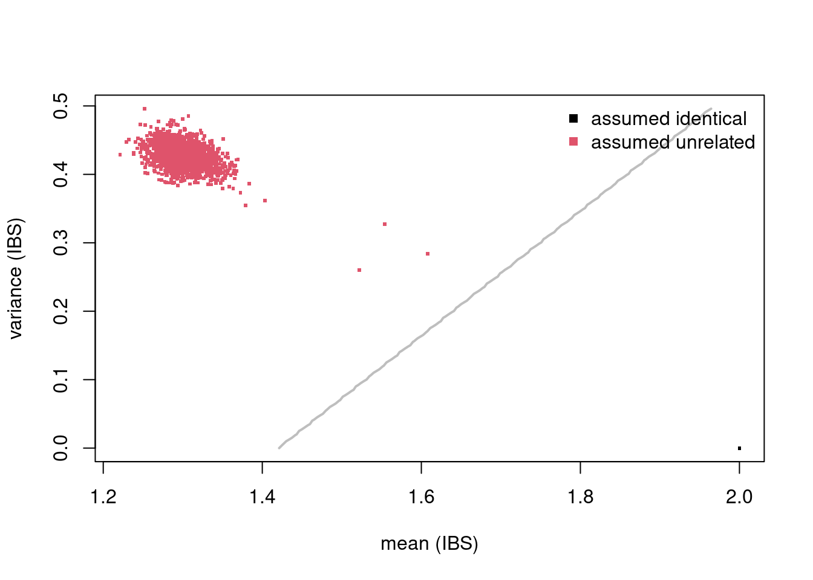
## 'data.frame': 0 obs. of 6 variables:
## $ mean : num
## $ var : num
## $ colnames.x: chr
## $ colnames.y: chr
## $ relation : Factor w/ 2 levels "identical","unrelated":
## $ predicted : Factor w/ 2 levels "identical","unrelated":##
## identical unrelated
## identical 0 0
## unrelated 0 0Since there are no twins or relatives in our data, all observations are shown as unrelated. In data with sample relationships, this would be shown in the above graph as green or black clusters (Van Iterson, 2018). It is important to carry out this type of visualization before probe-filtering as otherwise the genotyping will be based on very few SNPs.